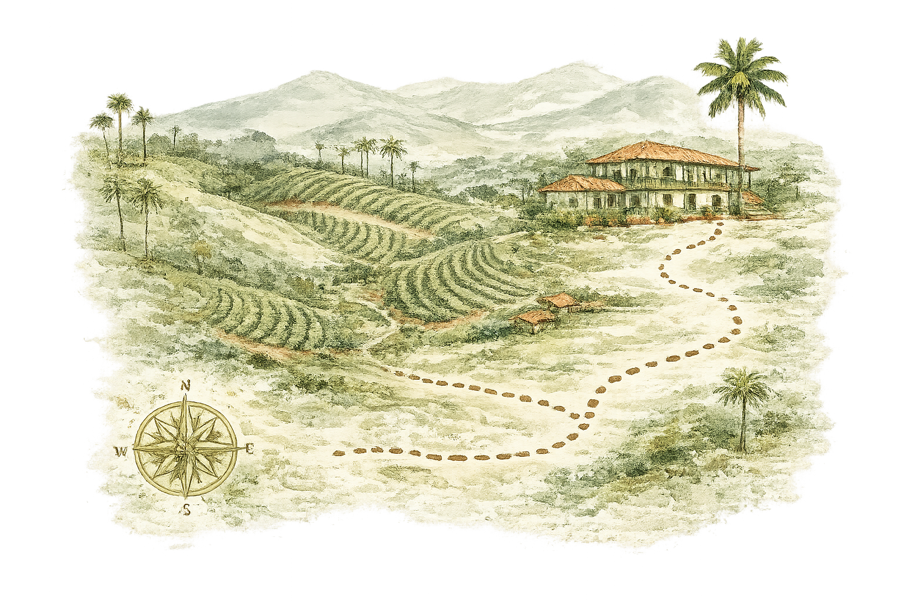

Dónde hospedarse
Recomendamos el Hotel Boutique Los Guaduales, a 10 minutos de la hacienda y con vista a los cafetales. Al reservar, mencionen la boda de Vanessa y Devan para acceder a la tarifa especial de grupo.
12 – 14 de junio de 2026
Santa Rosa de Cabal, Colombia

Nos hace muchísima ilusión celebrar nuestro matrimonio rodeados de las personas que más queremos, en el corazón del Eje Cafetero. Prepárense para un fin de semana de café, montañas y mucha fiesta: aquí encontrarán todo lo que necesitan para acompañarnos.

Recomendamos el Hotel Boutique Los Guaduales, a 10 minutos de la hacienda y con vista a los cafetales. Al reservar, mencionen la boda de Vanessa y Devan para acceder a la tarifa especial de grupo.
El aeropuerto más cercano es el Internacional Matecaña de Pereira (PEI), a unos 45 minutos en carro. Habrá transporte compartido desde Pereira y desde el parque principal de Santa Rosa antes de cada evento.
Reservar transporteSi quieren quedarse unos días más, la agencia Rutas del Cafetal organiza salidas a los termales, fincas cafeteras y el Valle de Cocora. Escríbanles de nuestra parte y armamos plan.

Valle de Santa Rosa de Cabal, Risaralda — Eje Cafetero colombiano
Viernes, 12 de junio
 4:00 p. m.
Llegada y check-in
4:00 p. m.
Llegada y check-in
 7:00 p. m.
Cóctel de bienvenida
7:00 p. m.
Cóctel de bienvenida
Sábado, 13 de junio
9:00 a. m.
Desayuno cafetero
 4:00 p. m.
Ceremonia
6:30 p. m.
Recepción y fiesta
4:00 p. m.
Ceremonia
6:30 p. m.
Recepción y fiesta
Domingo, 14 de junio
10:00 a. m.
Brunch de despedida
1:00 p. m.
Hasta pronto
Abrimos el fin de semana con un brindis al atardecer entre guaduas y farolitos. Habrá picadas de la región, música en vivo y todo el tiempo del mundo para ponernos al día.
Dress code: casual elegante
El momento que nos reúne a todos: nos casamos frente a las montañas, al aire libre. Les recomendamos llegar 30 minutos antes para acomodarse con calma.
Dress code: formal
Cena, brindis y pista de baile hasta la madrugada con orquesta y DJ. Si hay una canción que no puede faltar, cuéntennosla al confirmar su asistencia.
Dress code: formal, el mismo de la ceremonia
Para cerrar con calma: café recién pasado, arepas y jugos de la región mientras nos despedimos. Vengan como estén, sin afán — los queremos ver antes de que viajen.

Traje completo o saco y pantalón en tonos tierra, verde o azul; la corbata es opcional. En la montaña refresca al caer la noche, así que el saco se agradece. Zapatos cómodos: hay senderos de piedra y pasto.
Vestido largo o midi en tonos suaves — la paleta de abajo es una buena guía. Recomendamos tacón grueso o plataforma por el pasto, y un chal o abrigo ligero para la noche. Por favor, eviten el blanco.